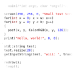
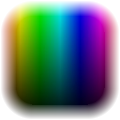
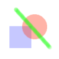
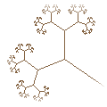
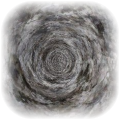
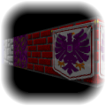
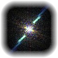
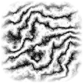

Lode 的计算机图形学教程 |
简介
|
 |
颜色与图像算术 |
 |
2D 绘图
|
 |
分形
|
 |
老式特效 |
 |
光线投射 |
 |
滤波与傅里叶变换 |
 |
纹理生成
|
 |
|
QuickCG 可在此处下载，编译文章中的代码时需要用到它。 DevC++ 用户可在此处下载 QuickCG 的项目文件：
|
| 最近更新 |
| 2019 年 12 月 27 日：光线投射器中改进了地板/天花板渲染技术。 |
| 2018 年 1 月 13 日：改进了洪水填充代码，并简化了光线投射器中的一个公式。 |
| 2016 年 2 月 12 日：修复了所有教程中的错误、笔误和格式问题，不再提供两个版本的 QuickCG。 |
| 2007 年 8 月 20 日：火焰教程已更新至新版 QuickCG，并将 QuickCG 的 waitFrame 改为以秒为单位（原为毫秒）。 |
| 2007 年 8 月 12 日：QuickCG 小幅更新，不向后兼容。 |
| 2007 年 7 月 3 日：傅里叶变换文章已更新至新版 QuickCG，如有编译问题请告知。 |
| 2007 年 6 月 17 日：光线投射教程已更新，使代码可与更新后的 QuickCG 配合使用。其他教程仍使用旧版 QuickCG 代码，因此旧版 QuickCG 的 .zip 文件重新提供下载。 |
| 2007 年 5 月 27 日：本站进行了一些调整，目录结构已更改，QuickCG 有所改进。部分链接可能失效，部分代码示例因 QuickCG 的不向后兼容更改而无法编译，部分文章已被删除，给您带来的不便敬请谅解。 |
|
如需联系我，请使用以下图片中的地址：
|
版权所有 (c) 2004-2018 Lode Vandevenne，保留所有权利。